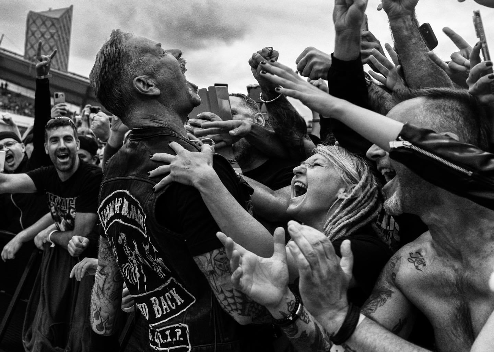
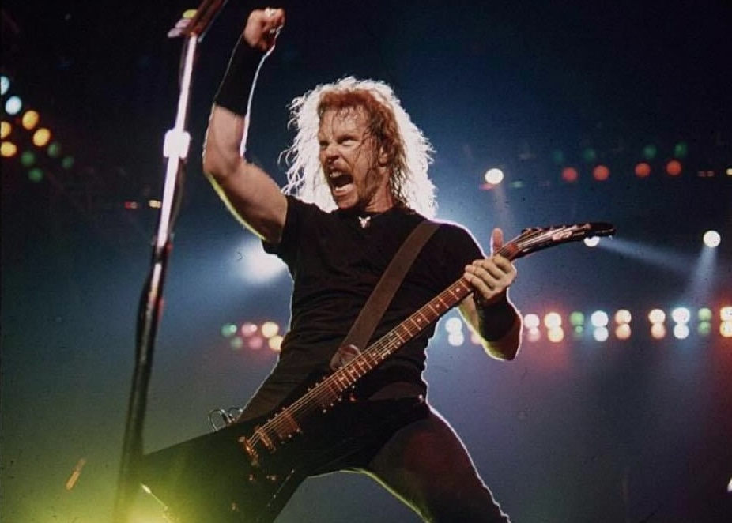
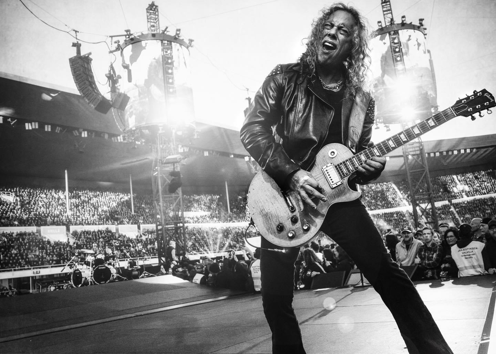

m72 tour
The thrash metal titan ignites the crowd..
calling of the ktulu
Legendary riffs, thrashing rhythm, iconic solo.

Prime Hetfield
stills from peak metallica from the 80's

Fearless Gaze
Intimidating the crowd with ’80s swagger.
James Hetfield, the indomitable frontman of Metallica, rose from humble beginnings to conquer the world of heavy
metal. Overcoming adversity with unwavering spirit, he transformed raw talent into a force to be reckoned with.
His powerful vocals and electrifying guitar riffs resonated with audiences worldwide, cementing his status as a
true icon. From his early days in a garage band to headlining sold-out stadiums, Hetfield's journey is a testament
to the human spirit's resilience and the power of passion. A modern-day gladiator, he battled through challenges
with unwavering determination, emerging victorious as a legendary figure in the realm of music. Often hailed as
the "Guitar Viking God" of the 80s, Hetfield's influence on heavy metal is undeniable, inspiring countless
musicians and fans alike.
Lars Ulrich, the Danish drummer and co-founder of Metallica, brought a relentless energy that propelled the band
to legendary status. Born into a family of tennis players, Lars broke away from expectations, trading a racquet
for drumsticks. Early in his career, he faced critics who doubted his skills, but his determination and vision for
Metallica’s future pushed him forward. Ulrich’s unyielding drive and leadership steered the band through
challenges, from lineup changes to the infamous Napster controversy. A master of precision and intensity, Lars'
groundbreaking drumming set the foundation for Metallica’s aggressive sound. He remains a symbol of grit and
innovation, shaping the face of metal for generations.

M72 TOUR

MISTER HAMMETT !!
80'S KILLER LEADS
Kirk Hammett, Metallica’s lead guitarist, rose from humble beginnings to become one
of
metal’s most revered musicians. Growing up in San Francisco, he faced a tough childhood marked by isolation and
poverty, but found solace in music. Inspired by the sounds of Black Sabbath and Jimi Hendrix, Hammett dedicated
himself to the guitar, refining his skills under the tutelage of guitar virtuoso Joe Satriani. Joining Metallica
in 1983, Kirk’s blistering solos and melodic mastery helped shape the band’s legendary sound, contributing to
classics like Fade to Black and One. Despite personal struggles and the pressures of fame, Hammett’s passion for
his craft never wavered. He remains a true guitar god, inspiring countless players worldwide with his emotive and
lightning-fast playing.
Robert Trujillo, Metallica's bassist since 2003, carved his path from the streets
of Venice
Beach to the world’s largest stages. Growing up in a rough neighborhood, Robert found solace in music, mastering
his craft with funk and thrash influences. Before joining Metallica, he made a name for himself playing with
Suicidal Tendencies and Ozzy Osbourne. His entry into Metallica marked a new era, bringing unmatched energy,
technical skill, and a revitalized stage presence. Trujillo’s thunderous bass lines have become the backbone of
the band's sound, solidifying his place among the greatest bassists in metal history, a true testament to rising
from humble beginnings to heavy metal glory.